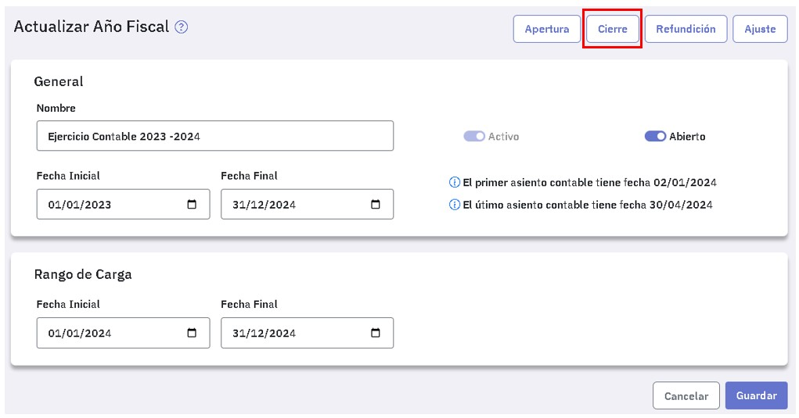
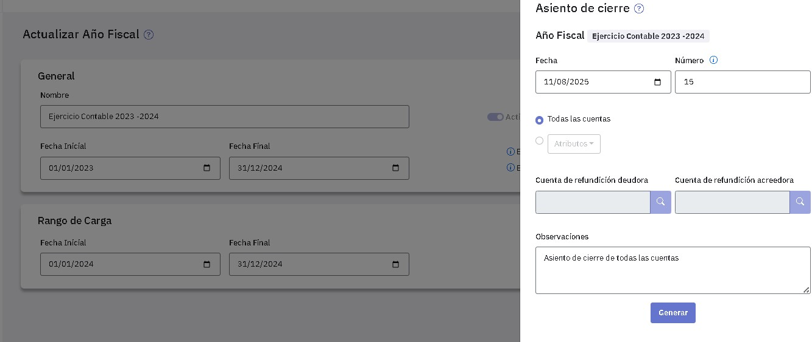

Asientos de cierre
Esta tarea permite generar los asientos de cierre en forma automática.
Para ello se requiere que el año fiscal esté abierto y activo. No obstante, también pueden registrarse en forma manual, desde el menú "Asientos", indicando en el campo "Tipo", "Cierre".
Los asientos de cierre que se generen incluyen todo el año fiscal.
Lo habitual es generarlos en forma automática, eventualmente luego podrás modificarlos desde el menú "Asientos".
Podés generar uno o varios asientos de cierre. Estos asientos quedan indicados comos de tipo "Cierre". Esto será de utilidad al generar asientos de apertura.
Para generar un asiento de cierre tenés que ingresar al punto "Año fiscal", asegurarte que el ejercicio económico esté activo y abierto y luego editarlo:

A continuación presioná el botón .

Podes generar un asiento de cierre con todas las cuentas o incluyendo solamente algunas de ellas, desde la siguiente pantalla.

Primeramente ingresá:
-
La fecha del asiento: te muestra la fecha actual, la fecha que ingreses debe estar dentro del rango de carga.
-
El número de asiento: te muestra el siguiente numero disponible y podés modificarlo.
Para generar un asiento incluyendo todas las cuentas seleccioná "Todas las cuentas". Las cuentas que presenten saldo deudor aparecerán con su saldo al haber y las que presenten saldo acreedor con su saldo al debe. Como resultado, el saldo de todas las cuentas quedará en cero.
Para generar un asiento que solo incluya algunas cuentas tenés que usar atributos, podes usar uno o varios. Al indicar atributos, el asiento de cierre incluirá todas las cuentas que posean todos los atributos que seleccionaste.
En este último caso tenés que indicar una cuenta de refundición para el debe (en el campo "Cuenta de refundición deudora") y una cuenta de refundición para el haber (en el campo "Cuenta de refundición acreedora"). El asiento de cierre deja las cuentas involucradas con saldo cero utilizando como contrapartida las dos cuentas de refundición que indicaste. Tené en cuenta que estas cuentas no pueden tener ni centro de costos ni tabla de indices o cotizaciones.
Las cuentas que se van a cerrar deben poseer todos los atributos seleccionados, por ej: si se selecciona el atributo "Gastos" y el atributo "Papelería", la cuenta debe poseer los 2 atributos.
Las cuentas de refundición para el debe y el haber no deben tener centros de costos ni tablas de índices o cotización.
Si es necesario, ingresá una observación para el asiento. Por defecto si seleccionaste "Todas" se ofrece "Asiento de cierre de todas las cuentas" y en el caso de indicar atributos se ofrece "Asiento de cierre de ctas con atributos: (detallando los nombres)"
Una vez que completaste los datos, presioná el botón "Generar" y verás un mensaje de confirmación. Desde allí disponés de un enlace para consultar el asiento generado.
Cierre de un ejercicio económico
Para cerrar un ejercicio económico, realizá estas tareas en el siguiente orden:
- Cierre de cuentas de resultado: Para ello tenés que haber definido previamente un atributo para identificarlas y correr el proceso indicando dicho atributo;, como cuentas de refundición deudora y acreedora seguramente indiques la cuenta "Resultado del ejercicio".
- Cierre de cuentas patrimoniales: una vez cerradas las cuentas de resultado, tenés que volver a ejecutar el proceso cerrando todas las cuentas restantes sin indicar ningún atributo, pues al haber cerrado las cuentas de resultado, solamente quedan las cuentas patrimoniales.
Si antes de cerrar el ejercicio necesitas trabajar en el siguiente consultá Como trabajar en un ejercicio sin cerrar el anterior.